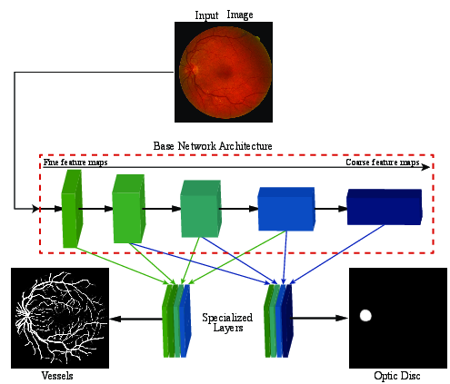

Publications

K.K. Maninis,
J. Pont-Tuset,
P. Arbeláez, and
L. Van Gool
Deep Retinal Image Understanding
Medical Image Computing and Computer-Assisted Intervention (MICCAI) 2016
[PDF] [Supplemental] [BibTex]
@inproceedings{Man+16,
author = {K.K. Maninis and J. Pont-Tuset and P. Arbel\'{a}ez and L. Van Gool},
title = {Deep Retinal Image Understanding},
booktitle = {Medical Image Computing and Computer-Assisted Intervention (MICCAI)},
year = {2016}
}Models and scripts
To reproduce the results reported in the paper, follow the next steps:
- Download this version of Caffe into a folder /path/to/caffe/
- Install caffe and its dependencies by following the steps here.
- Install pycaffe by running make pycaffe in /path/to/caffe/
- Make a folder named /path/to/caffe/DRIU/
- Download and place the model(s) and scripts under /path/to/caffe/DRIU/
- Download the test images and extract the content under /path/to/caffe/DRIU/
DRIU Models
Scripts and Images